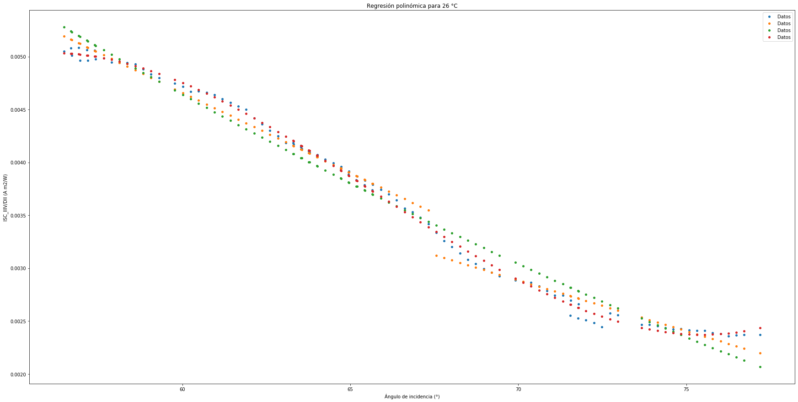

In [6]: runfile('C:/Users/juanj/OneDrive/Escritorio/repositorio_tfg/modelado_Si.py', wdir='C:/Users/juanj/OneDrive/Escritorio/repositorio_tfg')
Reloaded modules: Error
No se puede realizar una division por cero
El coeficiente de determinación para la regresión de primer grado es: 0.9922267331395759
El coeficiente de determinación para la regresión de segundo grado es: 0.979660841122
El coeficiente de determinación para la regresión de tercer grado es: 0.9977763743662819

In [7]: